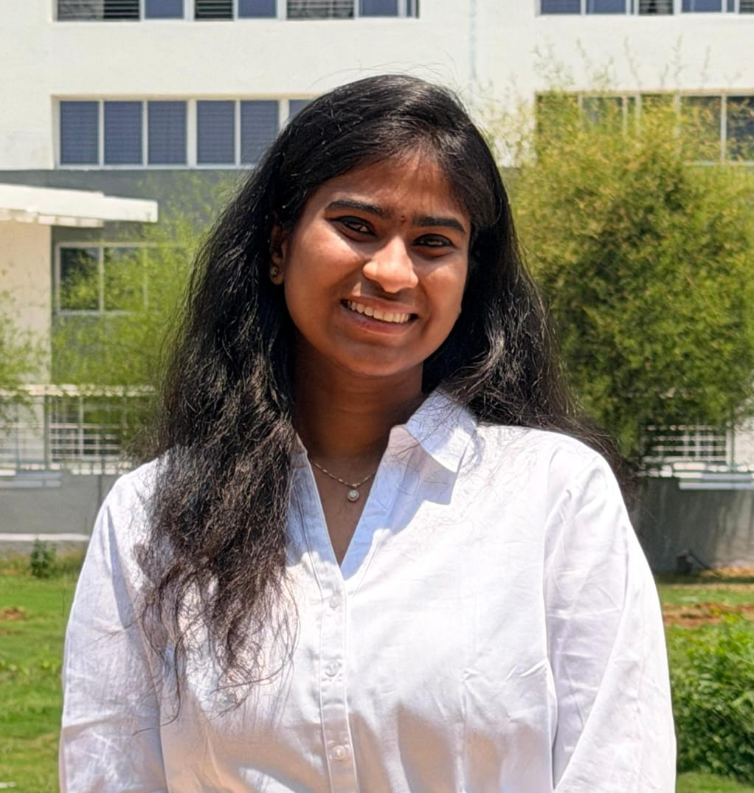

Motivated Software Engineer skilled in Python, Machine Learning, and Data Science with a passion for building scalable and intelligent applications.
Contact Me View Projects
I am an aspiring Software Engineer and Data Science enthusiast currently pursuing an Integrated M.Tech in Computer Science and Engineering with a specialization in Data Science at Vellore Institute of Technology, maintaining a strong academic record with a CGPA of 9.08.
My interests lie in software development, machine learning, artificial intelligence, and data-driven problem solving. I enjoy building intelligent applications that combine innovation with practical usability, with experience in developing AI-powered predictive systems, computer vision solutions, and IoT-based applications.
I am proficient in Python, SQL, and modern data science tools, with hands-on experience in machine learning frameworks such as Scikit-learn, Pandas, and NumPy. I am passionate about writing clean, scalable code and continuously learning emerging technologies to create impactful software solutions.
Beyond technical skills, I value teamwork, leadership, adaptability, and effective communication. I am actively seeking opportunities where I can contribute to innovative projects, expand my technical expertise, and grow as a software professional in a collaborative environment.
Built a hybrid VGG16 deep learning model with dual attention achieving 99.13% accuracy.
Created a real-time OpenCV motion detection system integrated with ThingSpeak cloud monitoring.
Developed an AI-powered cryptocurrency forecasting platform using LSTM and Flask.